Expertly tailored compression tops, bottoms and sleeves hug the body before and after a workout, with an integrated mesh layer that holds and allows for precise placement of Therapy Pods.
Introducing Snapbac Performance Recovery Apparel: a revolutionary combination of technology and temperature, and the world’s premier athletic gear designed exclusively to rejuvenate the body. Today's post-game regimen is really just the start of pre-game prep for tomorrow. Recover faster during training, competition and rehabilitation—with a previously unthinkable level of mobility—thanks to our innovative, reusable hot/cold therapy system.
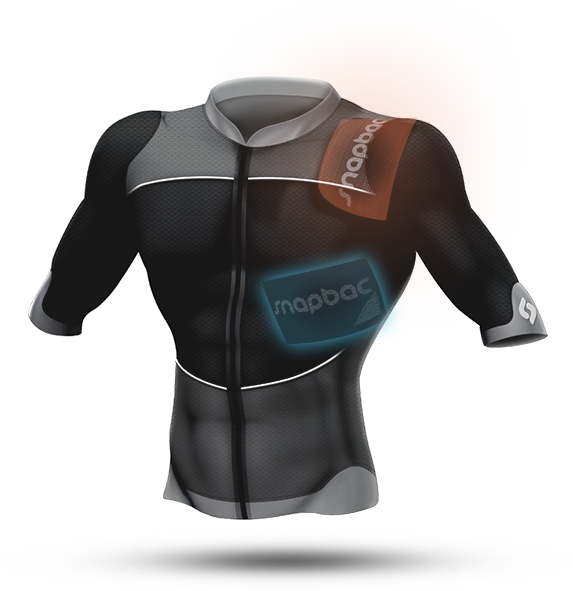
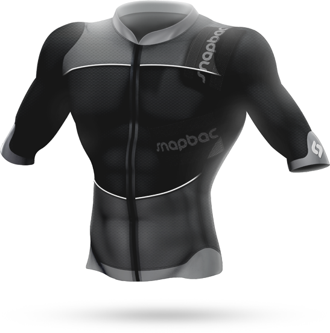
Expertly tailored compression tops, bottoms and sleeves hug the body before and after a workout, with an integrated mesh layer that holds and allows for precise placement of Therapy Pods.
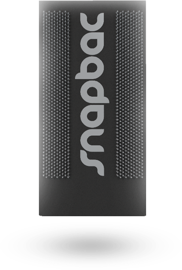
Therapy Pods efficiently reflect hot and cold treatment to the body while silicon spikes lock into the garment’s mesh for a secure fit — even while moving.
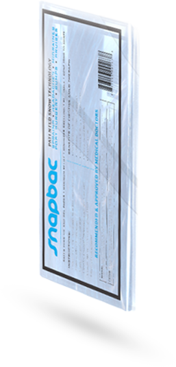
Reusable, state-of-art hot/cold packs slide into the Pods and easily compress to the contours of your anatomy.
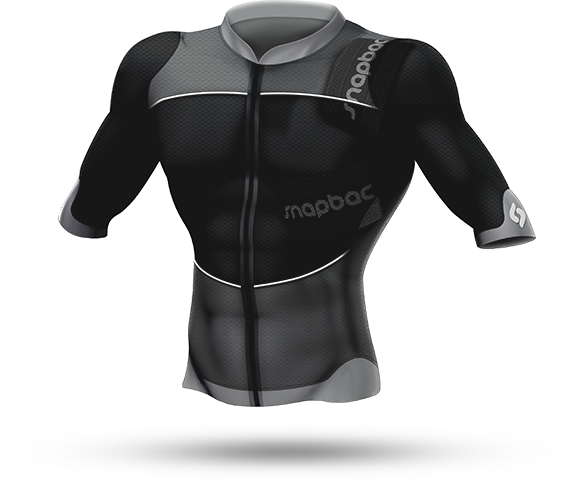
We believe every post-game is really the start of the next-pre-game. That’s why the Snapbac system is the most technologically advanced approach to temperature therapy available.
Perfect fit. Unmatched performance. And durability that stands up to an active lifestyle. Every detail of the innovative Snapbac system has been engineered with the very latest technology to keep athletes moving in peak condition.
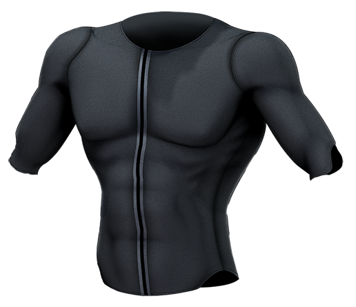
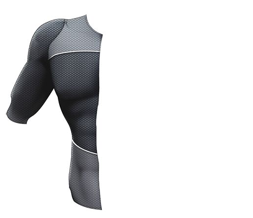
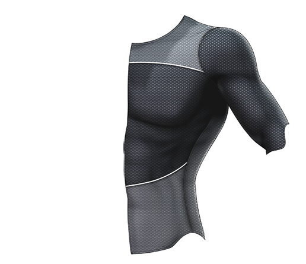
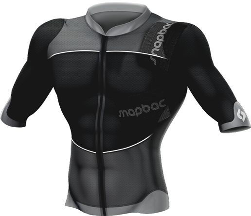
Openings provide access to the upper body, lower back, ribs, thighs and more so treatment areas are simple to target
Keeps you mobile during treatment without added bulk
Grabs Therapy Pod spikes to hold the hot/pack tightly against the body for greater temperature conduction
High-performance Lycra compression for a secure, comfortable fit that stabilizes muscle tissue for treatment
Minimizes muscle swelling for faster rejuvenation and recovery
Promotes proper cooling of targeted areas to aid therapy and protect skin
Eliminates moisture and condensation
Most performance gear represents a barrier to temperature therapy. Snapbac Performance Recovery Apparel was designed from the fibers to incorporate temperature therapy before and after activity. The clothes look great, feel great, and enable better, more targeted muscle rejuvenation than ever before.
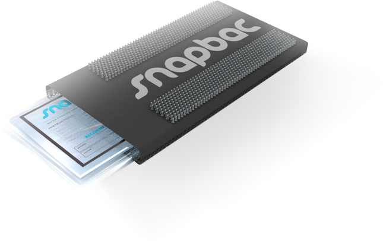
Ice is slippery stuff. It’s hard to get it to stay where you need it, especially as it melts, changes form, and soaks your clothes. The Snapbac Therapy Pod helps solve these problems. It’s designed to house the Snapbac Thermal Pack and be securely positioned within the garment or sleeve, even when you’re moving around.
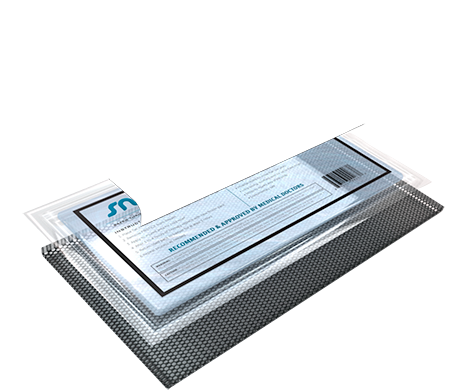
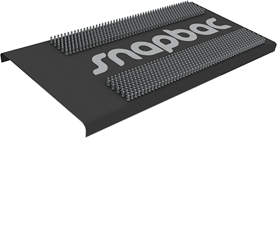
Laminated 3M™ Thinsulate™ Insulation side traps air molecules and reflects temperature toward body for greater efficiency.
Outer Snapbac 360° Soft silicon spikes interlock with the outer mesh of the garment, providing secure placement in the desired treatment area.
Large-hole mesh backing allows the easy transfer of cold/heat therapy to the desired treatment area while protecting skin.
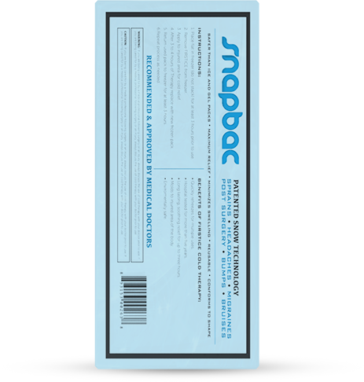
Food-grade glycol formula is safe and non-toxic.
Air permeable valve allows passage of air, increasing pilability of the glycol pack.
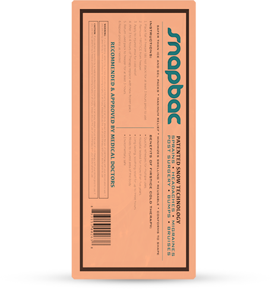
Retains temperatures by staying cold for up to 2 hours, or warm for 30 minutes in the Snapbac Therapy Pod.
Remains soft and pliable when removed from the freezer or microwave, conforming to the treatment area on the body.
Say goodbye to disposable ice bags and heat pads. Our Snapbac Hot/Cold Therapy packs replace both. They can be frozen or microwaved as you need them—over and over— for better performance with zero waste.
Let’s ditch the drippy ice bags. Eat the frozen peas. Save our skin from adhesive pads and burns. Reducing inflammation and helping muscles rebound shouldn’t feel like a whole other workout. It should be simple, feel great and keep you as mobile as possible. The innovative Snapbac system is designed to rejuvenate the body through an unmatched combination of technology and temperature. It conforms to athletes’ bodies and fits their lifestyles. It’s the most effective, convenient temperature therapy system available. Period.
“When I discovered Snapbac, I recognized the profound impact it could have not only in the world of sports but also in everyday life. The time spent on performance therapy is incredibly valuable, and our bodies deserve the best and most practical treatment available. I’ve incorporated Snapbac into my preparation and recovery routine and encourage everyone from the casual participant to elite athlete to do the same.”
-derek Jeter | Snapbac Co-founder And Investor
When we set out to create the best temperature therapy system for active people, we started at the top. As an athlete who understands the importance of cold and heat treatment, Derek Jeter embraced the Snapbac concept with passion and has played an integral role in the design and development of our patented technology.
From the most accomplished major leaguer of our era to the everyman on a mission to remain elite, Snapbac therapeutic recovery apparel will revolutionize the way we use cold and heat to help active people rejuvenate and keep moving.
Snapbac combines technology, temperature science and design to create the world’s first athletic gear designed to rejuvenate the body against the demands of year-round training, competition and rehabilitation. Our products are developed with the input from renowned physicians, trainers and athletes at the top of their respective fields.
We are a diverse team of innovative individuals with a shared passion for and focus on providing athletes with the most advanced and effective solution to cold and heat therapy available—because we believe that today, post-game recovery is really just the start of pre-game preparation.